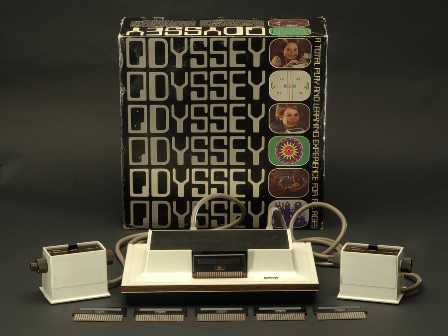

<
Comercializada por la filial de Philips en Estados Unidos, la Magnavox Odyssey es la primera videoconsola de la historia, y fue desarrollada por Ralph Baer (apodado «el padre de los videojuegos»).
Únicamente dibujaba un punto móvil y barras verticales en la pantalla,
por lo que era necesario jugar con plantillas en el televisor.
El lanzamiento de la Odyssey generó en todo el mundo un caso severo de
la “locura de Pong”, y compañías por todo el mundo comenzaron a desarrollar sus propias máquinas.
>
